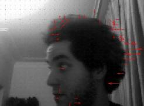
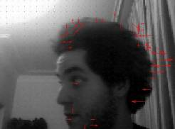

Python Packages

- Qpage (Free project for creating academic homepage)
- Pylist (Create m3u playlist file by python)
- Pyshut (Shutdown computer with timer)
- PyIP (Free Project For Finding Available IPs and SSH Servers In Local Network)
- PyChat (Simple UDP Chat By Python)
- PyError (Error detection package in Python)
Etching 74HC245 Octal Bus Tranceiver
Simple Light Audio Trasmitter
In This Project We Transmit Stereo Sound Via Light
Git Quick Guide ( In Persian)
Git Quick Guide In Persian ;-)
Resistor Table (V 1.2)
Its a simple program that convert resistor color to value and vice versa
Hex2Bin Simple GUI ( V 1.0)
This tool is used for converting hexadecimal(.HEX & .EEP) files (either Motorola or Intel format) into a binary file
Optical Flow Implementation ( Horn-Schunck Method )
Optical Flow Implementation In Matlab ( Horn-Schunck Method)
Multimedia Signals Semantic Analysis
Multimedia Signals Semantic Analysis And Processing ( Multimedia Systems Course , Final Presentation)
Instructor : Dr. Mohammad Ahadi
Thermoelectric Effects And Designing Smart Wall
Thermoelectric Effects And Designing Smart Wall (Research Methods & Report Writing Course , Final Project)
Instructor : Dr. Farzaneh Abdollahi
VLSI Designing And Simulation Of 1-Bit Full Adder (+ Amir Naderi , +Elahe Parham)
Designing And Simulation Of 1-Bit Full Adder Using 0.5 Micron CMOS Technology ( VLSI System Design Course , Final Project)
Instructor : Dr. Majid Shalchian
BCD Adder Simulation ( +Mahmoud Ebrahimkhani)
BCD Adder Simulation With Proteus For Logic Circuits Course Final Project
Instructor : Dr. Karim Faez
Ant Colony & Neural Network For Beginners ( +Reza Vatani )
Degrees/ Minutes/ Seconds 2 Latitude Longitude Calculator (V 1.2)
Linear Algebra In Machine Learning (Linear Algebra Course Project)
Foundation Of Matrix And Linear Algebra Course Project
Instructor : Dr. Seyedi
Lights-Out Game(V 1.4)
The game consists of a 5 by 5 grid of lights. When the game starts, a random number or a stored pattern of these lights is switched on.
Pressing any of the lights will toggle it and the four adjacent lights. The goal of the puzzle is to switch all the lights off, preferably in as few button presses as possible
Guess The Number(V1.0)
Guess The Number Game With Range(0,1000)
SOS (C++ Course Project) (+Mehrdad Salimi Tari)
Players take turns to add either an "S" or an "O" to any square, with no requirement to use the same letter each turn. The object of the game is for each player to attempt to create the straight sequence S-O-S among connected squares (either diagonally, horizontally, or vertically), and to create as many such sequences as they can. If a player succeeds in creating an SOS, that player immediately takes another turn, and continues to do so until no SOS can be created on their turn. Otherwise turns alternate between players after each move
Instructor : Dr. Ali Pourmohammad
Coordinate Converter(Electromagnetics Course Project)
Instructor : Dr. Ayaz Ghorbani
This Project Written In Python 2.7.2 With Sympy Lib.
Automatic Shutdown
I Wrote This Program Only For Hibernating My Laptop After Download In Midnight :D


 
